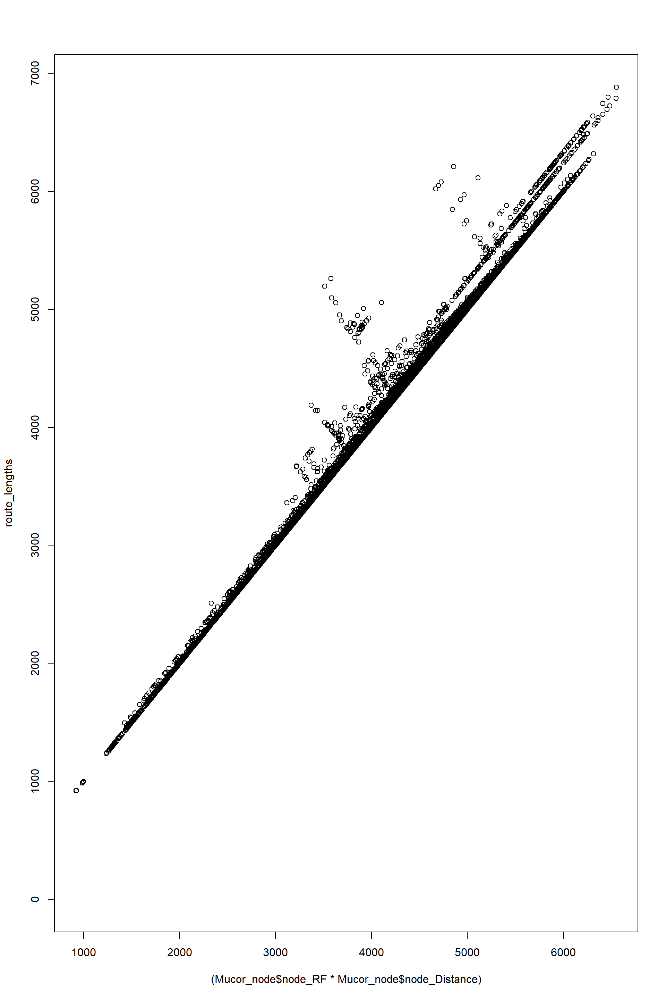

Check in igraph how to identify particular routes in a network
library(igraph)
library(tidyverse)igraph is versatile to analyze network properties. The first step is to create an igraph object from the edge list and node list tha comes out of Mark´s app
Mucor_edge<-read.csv("processedData\\DF56(6)_t09-Edge.csv",header = T, stringsAsFactors = F)#Node_Traits[which(Node_Traits$name=="DF56(6)_t09"),]
Mucor_node<-read.csv("processedData\\DF56(6)_t09-Node.csv",header = T, stringsAsFactors = F,sep = ";",dec = ",")#Node_Traits[which(Node_Traits$name=="DF56(6)_t09"),]
edges_1<-Mucor_edge[,c("EndNodes_1","EndNodes_2")]#Edge_Traits[which(Edge_Traits$name=="DF56(6)_t09"),c("EndNodes_1","EndNodes_2")]
edges_1<-graph_from_edgelist(as.matrix(edges_1),directed = F)
spatial.data<-Mucor_node[,#Node_Traits[which(Node_Traits$name=="DF56(6)_t09"),
c("node_ID","node_X_pix","node_Y_pix")]
l <- as.matrix(spatial.data[,c(2,3)])
l <- norm_coords(l, ymin=-1, ymax=1, xmin=-1, xmax=1)Visualizing the network via the igraph object
plot(edges_1,
edge.arrow.size=1,edge.curved=0,edge.width=2,
edge.color="black", vertex.label=NA,vertex.shape="none",
edge.size=150,vertex.size=0,layout=l*1,main="Real Network")Attributes can be anything and can be name however I want to. Except for “weight” which will be used as the link weight
According to Mark´s manual these weights for hypha should be resistance. Other than those I will assign other attributes: length, width, distance for hyphae; same thing can be done to nodes
#E(edges_1)$weight<-Mucor_edge$Resistance_2ave
E(edges_1)$weight<-Mucor_edge$Resistance_2
E(edges_1)$lenght<-Mucor_edge$Length
E(edges_1)$width<-Mucor_edge$Width
V(edges_1)$degree<-degree(edges_1)
V(edges_1)$distance<-Mucor_node$node_Distance
E(edges_1)$distance<-Mucor_edge$Distance
#NOTE!!!!!
#tapply(Edge_Traits$Width,Edge_Traits$name,max)#This is weird the maximum is fixed at 5.6 regardless of the colony, and when I also analyze my close up, I also get 5.6 as max value (which particularly makes no sense)
#tapply(Edge_Traits$Width,Edge_Traits$name,min)Now I calculate the shortests paths from the inoculum and to every other vertex. As specifed in Mark´s manual, the shortest path is the one that sums the lowest resistance (using Resistance_2). To do this, igrap has the function get.shortest.paths, which according to its documentation uses the same algorithm as reported in Mark´s manual, quoting: “By default igraph tries to select the fastest suitable algorithm. If there are no weights, then an unweighted breadth-first search is used, otherwise if all weights are positive, then Dijkstra’s algorithm is used.”
#With this line one can check which number corresponds to the inoculum
Mucor_edge[which(Mucor_edge$Type=="F"),c("EndNodes_1","EndNodes_2")]## EndNodes_1 EndNodes_2
## 2761 2390 5279
## 2777 2405 5279
## 2796 2419 5279
## 3013 2601 5279
## 3048 2629 5279
## 3054 2635 5279
## 3062 2640 5279
## 3354 2875 5279
## 3392 2906 5279
## 3678 3155 5279
## 3692 3171 5279
## 3823 3272 5279
## 3900 3338 5279
## 3950 3382 5279
## 3967 3397 5279
## 4004 3430 5279
## 4015 3437 5279
## 4018 3439 5279
## 4030 3451 5279
## 4067 3485 5279
## 4083 3496 5279
## 4249 3626 5279
## 4300 3668 5279
## 4470 3822 5279
## 4472 3823 5279
## 4476 3826 5279
## 4489 3840 5279trial<-get.shortest.paths(edges_1,from = 5279)I can now get node accessibility using igraph. For that I use the function distances and it does give me exactly the same values as in node_accessiblity coming from Mark´s app
plot(
distances(edges_1,v=5279),#here each distance is the lowest summation of edge resistances from node 5279 to each other node
Mucor_node$node_Accessibility
)temporal<-distances(edges_1,v=5279)
summary(as.vector(temporal)/
as.vector(Mucor_node$node_Accessibility))## Min. 1st Qu. Median Mean 3rd Qu. Max. NA's
## 1 1 1 1 1 1 1Now I am trying to get the total length of those shortests paths. In principle these lenghts should be identical to the ones obtained by multiplying the node route factor with the node distance
(Mucor_node$node_RF*Mucor_node$node_Distance)[1]## [1] 5358.125I found two methods to do this:
#Method 1
sum(E(edges_1,path = trial$vpath[[1]])$lenght
)## [1] 5427.525#Method 2
sum(
E(induced.subgraph(edges_1,as_ids(trial$vpath[[1]])))$lenght
)## [1] 5427.525Now calculating these lengths for all the network using method 1 and comparing with node_rf * node_distance
route_lengths<-rep(0,length(Mucor_node$node_RF))
for (i in 1:length(trial$vpath)) {
route_lengths[i]<-sum(E(edges_1,path = trial$vpath[[i]])$lenght
)
}
plot(
(Mucor_node$node_RF*Mucor_node$node_Distance),
route_lengths
)
A smilar result is obtanied by using method 2 and comparing with node_rf * node_distance
These results confirm the following:
Now trying to calculate new stuff
Here, what I am doing is selecting a particular “shortest” path based on their width. This means that one can select distincts parts of the mycelia for analysis.
ecol<-rep("black",ecount(edges_1))
ecol[
E(edges_1,path = trial$vpath[[1]])[
E(edges_1,path = trial$vpath[[1]])>=0.7*
E(edges_1,path = trial$vpath[[1]])$width]
]<-"orange"
plot(edges_1,
edge.arrow.size=1,edge.curved=0,edge.width=2,
vertex.label=NA,vertex.shape="none",
edge.color=ecol,
edge.size=150,vertex.size=0,layout=l*1,main="Real Network")#neighbors(edges_1,5279)
#incident(edges_1,5279)
E(edges_1)$type<-"E"
E(edges_1)[incident(edges_1,5279)]$type<-"F"
ecol<-rep("black",ecount(edges_1))
ecol[
E(edges_1)$lenght==max(
E(edges_1)[
E(edges_1)$type=="E"]$lenght)
]<-"orange"
plot(edges_1,
edge.arrow.size=1,edge.curved=0,edge.width=2,
vertex.label=NA,vertex.shape="none",
edge.color=ecol,
edge.size=150,vertex.size=0,layout=l*1,main="Real Network")ecol<-rep("black",ecount(edges_1))
ecol[E(edges_1)[inc(V(edges_1)[degree==1])&lenght>200]#Selecting very long hyphal tips
]<-"green"
ecol[E(edges_1)$type=="F"]<-"gray80"
# ecol[E(edges_1)[inc(V(edges_1)[degree==2])]
# ]<-"blue"
# ecol[E(edges_1)[inc(V(edges_1)[degree==3])]
# ]<-"red"
plot(edges_1,
edge.arrow.size=1,edge.curved=0,edge.width=2,
vertex.label.cex=0.2,
#vertex.shape="none",
edge.color=ecol,
edge.size=150,vertex.size=0,layout=l*1,main="Real Network")# plot(edges_1,
# vertex.label.color="black", vertex.label.cex=1,vertex.size=1,
# edge.color=ecol,layout=l)
# edges_1mst<-mst(edges_1)
head(E(edges_1mst)$weight)## [1] 166.918838 12.880956 14.951232 9.968187 11.853373 29.209799length(E(edges_1))## [1] 6090length(E(edges_1mst))## [1] 5278plot(edges_1mst,
edge.arrow.size=1,edge.curved=0,edge.width=2,
edge.color="black", vertex.label=NA,vertex.shape="none",
edge.size=150,vertex.size=0,layout=l*1,main="Minimum Spanning Tree")edges_1_no_weights<-edges_1
edges_1_no_weights<-
delete_edge_attr(edges_1_no_weights,"weight")
edges_1_no_weights_mst<-mst(edges_1_no_weights)
length(E(edges_1_no_weights_mst))## [1] 5278E(edges_1_no_weights_mst)$weight## NULLplot(edges_1_no_weights_mst,
edge.arrow.size=1,edge.curved=0,edge.width=2,
edge.color="black", vertex.label=NA,vertex.shape="none",
edge.size=150,vertex.size=0,layout=l*1,main="Minimum Spanning Tree no weights")For the other toy models (like the relative neighborhood graphs, gabriel graph and delauney triangulation) it seems it is more complicated because they are based on vertex positions not based on network attributes. One possiblity would be to add weights to the toy models based on mean attribute values from the real models and then calculate resistance and accessibility
no_feature<-
subgraph.edges(edges_1,E(edges_1)[type=="E"])
E(no_feature)$hyphae<-"main"
E(no_feature)[inc(V(no_feature)[degree==1])]$hyphae<-"tip"
#E(no_feature)[inc(V(no_feature)[degree==1])]$hyphae<-"tip"
probando<-rbind(
data.frame(degree="tip",Lengths=
E(no_feature)[hyphae=="tip"]$lenght,
Widths=E(no_feature)[hyphae=="tip"]$width,
Distance=E(no_feature)[hyphae=="tip"]$distance),
data.frame(degree="main",Lengths=
E(no_feature)[hyphae=="main"]$lenght,
Widths=E(no_feature)[hyphae=="main"]$width,
Distance=E(no_feature)[hyphae=="main"]$distance)#,
)
#table(probando$degree)
probando %>%
#filter(degree=="main") %>%
ggplot()+
aes(degree,Widths)+
geom_boxplot() #aes(Distance,Widths)+#It does not seem to be a relationship between widht and distances, meaning that certain hyphae remian thick all the way from the inoculum to the the tip
#geom_point()hist(probando$Widths[probando$degree=="main"])hist(probando$Widths[probando$degree=="tip"])From these plots it is clear that there is a difference in width between hyphae a the tips and main hyphae. But that is not the case for length, which keeps constant along the mycelium. So as descriptive trait I will use each mean for width and a single mean for length
Analyzing hyphal width as a bimodal distribution. This was deprepecated in favour of separate analysis of hyphal tip widths and main hyphae widths distinguishing them by degree
Understanding betweeness. This analysis was deprecated. Instead I move all analysis of network traits using igraph. But some patterns are interesting:
The betwenness of edges k=1 is not the same as the total number of edges
But these two values are proportional to each other
The edges of maximum betweenness for each colony are located always close to the center of the colony
But they are not at the minimal distance, they lay though within 2 times the minimum distance
It makes sense for the maximum betweenness to lay close to the center of the colony as it is where most of the “root” edges are
The minimum betweenness value is 0 and it occurs in all colonies. Thus the question is, what do edges with betwenness 0 have in common?
+ a) They are not tips. All of them have a degree larger or equal to two